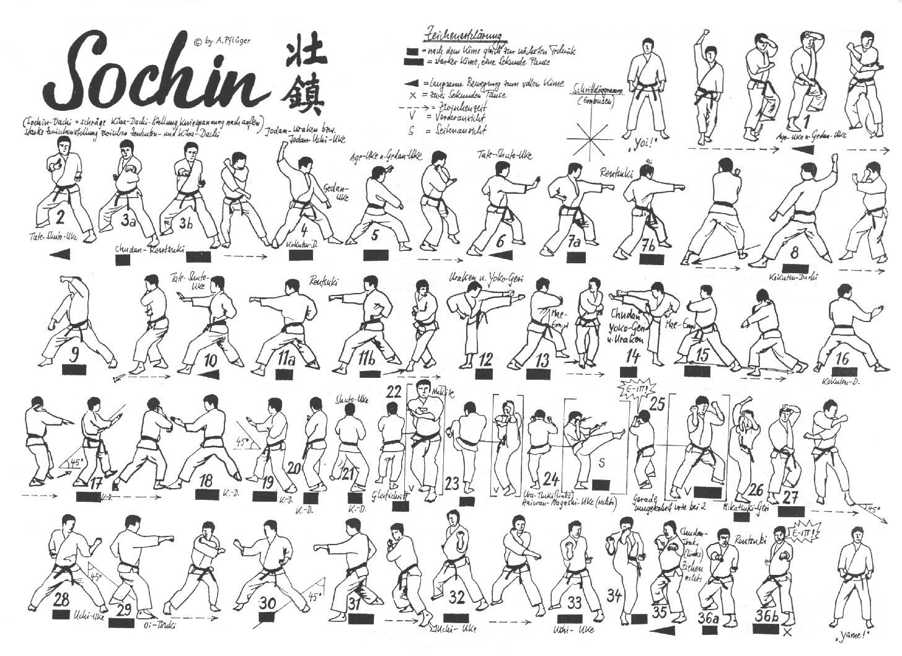

Sochin

- Yoi andando in Hachiji Dachi
- Avanzando lentamente in Migi Sochin Dachi eseguo in contrazione Hidari Age Uke e Migi Gedan Barai.
- Avanzo eseguendo Migi Chudan Tate Shuto con anca aperta
- Ren Tzuki
- Rotazione in senso antiorario di 90° andando in Hidari Kokutsu Dachi ed eseguo contemporaneamente Jodan Uchi Uke destro Gedan Barai sinistro.
- Avanzando lentamente in Migi Sochin Dachi eseguo in contrazione Hidari Age Uke e Migi Gedan Barai.
- Avanzo eseguendo Hidari Chudan Tate Shuto con anca aperta
- Ren Tzuki
- Rotazione in senso antiorario di 180° andando in Hidari Kokutsu Dachi ed eseguo contemporaneamente Jodan Uchi Uke destro Gedan Barai sinistro.
- Avanzando lentamente in Migi Sochin Dachi eseguo in contrazione Hidari Age Uke e Migi Gedan Barai.
- Avanzo eseguendo Migi Chudan Tate Shuto con anca aperta
- Ren Tzuki
- Eseguo Hidari Ushiro Yoko Geri e mentre richiamo scendo in Hidari Sochin Dachi eseguo Migi Empi Uchi
- Mawatte eseguendo Migi Ushiro Yoko Geri e mentre richiamo scendo in Hidari Sochin Dachi eseguo Hidari Empi Uchi
- Ruotando di schiena di 180° eseguo in Kokutzu Dachi Shuto Uke destro.
- Avanzo di un passo a 45°, paro con Shuto Uke sinistro.
- Sposto la gamba avanti e mi riporto sulla perpendicolare, paro con Shuto Uke sinistro.
- Avanzo di un passo a 45° e paro con Shuto Uke destro.
- Sposto la gamba destra di 45° in senso orario ed eseguo Shuto Uke destro
- Avanzo di un passo e paro con Shuto Uke sinistro
- Hidari Osae Uke e Migi Yohon Nukite con il palmo rivolto verso l’alto
- Tenendo ferme le braccia eseguo Tsuri Ashi Hidari Mae Geri
- Avanzo in Migi Mikazuki Geri e scendo in Sochin Dachi simulando una rottura con doppio Jodan Soto Uke con il destro avanzato. Kiai.
- Ruoto il Busto di 180° in senso antiorario, apro il braccio sinistro in Hidari Jodan Haishu Uke ed eseguo Migi Mikazuki Geri e scendo in Sochin Dachi eseguendo Hidari Age Uke e Migi Gedan Barai
- Avanzo a 45° verso sinistra eseguendo Hidari Uchi Uke e avanzo nuovamente in Oi Tzuki destro
- Spostamento di 90° verso destra eseguendo Migi Uchi Uke e avanzo nuovamente in Oi Tzuki sinistro
- Sposto la gamba sinistra di 45° in senso antiorario ed eseguo Uchi Uke Sinistro seguito da Uchi Uke destro.
- Eseguo Mae Geri destro e lo richiamo lentamente riportandolo dietro in Hidari Sochin Dachi, mentre scendo eseguo Hidari Tzuki ad altezza spalla e il destro viene richiamato alla spalla con il dorso rivolto verso l’alto.
- Ren Tzuki. Kiai.
- Richiamo il piede sinistro in Hachiji Dachi.
- Yame!